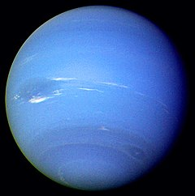
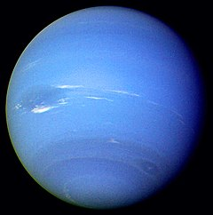

Сонячна система — планетна система, що включає в себе центральну зорю — Сонце, і всі природні космічні об'єкти (планети, астероїди, комети, потоки сонячного вітру тощо), які об'єднуються гравітаційною взаємодією. Сонячна система є частиною значно більшого комплексу, який складається із зірок і міжзоряної речовини — галактики Чумацький Шлях.
У сонячній системі є наступні види крсмічних тіл:
- Зірки
- Планети
- Астероїди
- Комети
- Кентаври
- Карликові планети
- Супутники
Основні зарактеристики планет сонячнох системи
| Назва | Маса | Прискорення вільного падіння | Тиск на поверхні |
|---|---|---|---|
| Меркурій | 3,3011× 1023 кг | 3,70 м/с² | ~5·10–15 бар |
| Венера | 4,8685× 1024 кг | 8,87 м/с² | 93 бар |
| Земля | 5,9737×1024 кг | 9,766 м/с² | 101,325 кПа |
| Марс | 6,4185× 1023 кг | 3,711 м/с² | 0,636 (0,4–0,87) кПа |
| Юпітер | 1,8986× 1027 кг | 24,79 м/с² | 20—220 кПа |
| Сатурн | 5,6846× 1026 | 10,44 м/с² | 0,636 (0,4-0,87) кПа |
| Уран | (8,6810 ± 0.0013) × 1025 кг | 21,3 м/с² | - |
| Нептун | 1,0243× 1026 кг | 11,15 м/с² | - |
Галерея Газових гігантів
 
